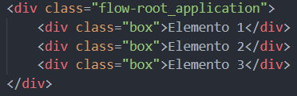
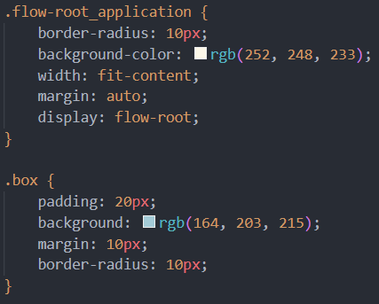
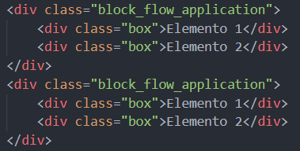
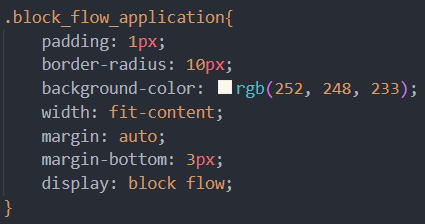
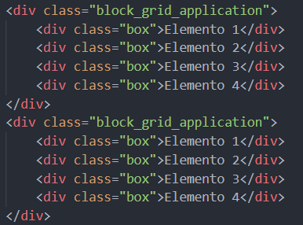
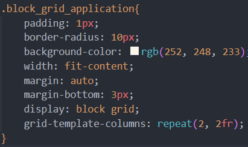
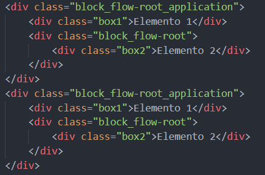
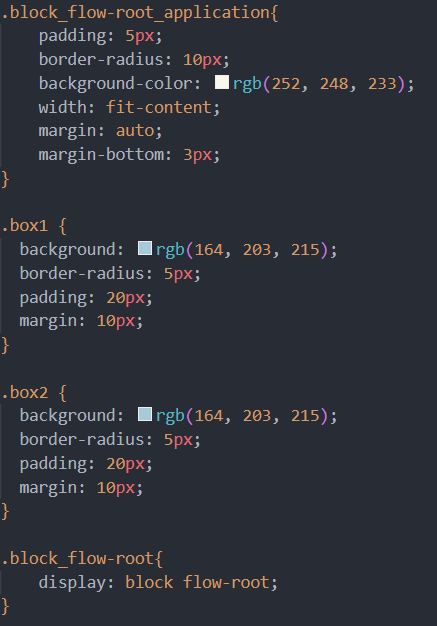

Conceito
Conceito
A propriedade display é a propriedade mais importante do CSS para controlar o layout, o valor padrão pode variar de elemento para elemento, de modo geral o valor padrão é display:block ou display:inline. Outra característica dessa propriedade é a facilidade para criar layouts responsivos, que são facilmente adaptados para diferentes tamanhos de tela.Existem dois tipos de elementos HTML. O elemento em bloco ou block ocupa 100% da largura disponível e para ele é sempre iniciado em uma nova linha. Um exemplo são os títulos, divs e parágrafos.Já os elementos em linha ou inline ocupam apenas o espaço necessário para exibir o seu conteúdo. Por exemplo: imagens, links, entre outros.A propriedade display permite modificar a forma como esses elementos são renderizados.
Display: block
Um elemento com display: block é exibido como um bloco, ocupando toda a largura disponível. Isso significa que ele começa em uma nova linha e "empurra" os outros elementos para cima e para baixo, forçando uma quebra de linha antes e depois de si.
Display: inline
O elemento gera uma ou mais caixas de elemento em linha que não geram quebras de linha antes ou depois de si mesmas. No fluxo normal, o próximo elemento estará na mesma linha se houver espaço.
Display: inline-block
Elementos com display INLINE-BLOCK vão se manter posicionados um ao lado do outro, sem quebras de linhas (comportamento herdado do inline), mas te dão a liberdade de atribuir a eles width, height, margins e paddings (comportamento herdado do block).
Display: flex
Atalho para as propriedades flex-grow, flex-shrink e flex-basis. Geralmente você verá a propriedade flex nos flex itens ao invés de cada um dos valores separados. Para melhor consistência entre os browsers, é recomendado utilizar a propriedade flex ao invés de cada propriedade separada.
Display: inline-flex
É uma propriedade CSS que define um elemento como um contêiner flexível, mas com comportamento "embutido" (inline). Diferente do display: flex, que ocupa toda a largura (bloco), o inline-flex` ajusta a largura ao seu conteúdo e permite que outros elementos fiquem ao seu lado.
Display: table
É uma propriedade que faz com que elementos do HTML como as div, se comportem como tabelas, de modo que permita o alinhamento vertical e de elementos com alturas dinâmicas, fazendo com que as colunas tenham a mesma altura e que sejam adaptáveis ao conteúdo colocado.
Exemplo
de
uma
Display: Inline-flex
Para definir sua tabela você precisa definir linhas (utilizando row) e colunas (utilizando col)
Display: inline-flex
É uma propriedade CSS que define um elemento como um contêiner flexível (lado a lado ou coluna), mas com comportamento "embutido" (inline = o elemento não quebra linha). Diferente do display: flex, que ocupa toda a largura (bloco), o inline-flex` ajusta a largura ao seu conteúdo e permite que outros elementos fiquem ao seu lado.
Exemplo
de
uma
Display: Inline-flex
Display: grid
Ele permite organizar elementos em linhas e colunas, como uma tabela mas muito mais flexível que o table. Você controla: quantas colunas, quantas linhas e tamanhos.
Exemplo
de
uma
Display: grid
Display: inline-grid
É um valor da propriedade display que define um elemento como um contêiner de grade (Grid Layout), mas faz com que ele se comporte como um elemento inline (linha) em vez de um bloco, ocupando apenas o espaço necessário e permitindo que outros elementos fiquem ao seu lado.
Exemplo
de
aplicação
de
Display: Inline-grid
Display: flow-root
O valor faz com que o elemento gere uma caixa de elemento de bloco que estabelece um novo contexto de formatação de bloco, definindo onde se encontra a raiz da formatação, ou seja, o elemento passa a controlar melhor o comportamento dos elementos internos, evita o colapso de margens, floats internos saindo do elemento e externos invadindo.
HTML

CSS

Display: block flow
O elemento funciona basicamente como um block, ocupando toda a largura da tela e colocando os elementos um abaixo do outro, e o flow apenas certifica que os elementos sigam o fluxo natural do css, ou seja, um embaixo do outro.
HTML

CSS

Display: block flex
Muitas pessoas podem pensar que o “display:block flex;” é contraditório, porém ele realmente existe. O display funciona de modo que, quando você coloca apenas um valor dentro dele, ele controla apenas o elemento/contêiner pai, porém quando se coloca um segundo valor, ele está controlando os elementos filhos (elementos de dentro do elemento pai). o que faz com que o elemento pai se comporte como block (um embaixo do outro) e os elementos filhos como flex (um alo lado do outro).
HTML
CSS
Display: block grid
O “display:block grid;” segue a mesma lógica do “display:block flex;”, porém ao invés dos elementos filhos se comportarem como flex, eles irão se comportar como grid podendo definir colunas e linhas para esses elementos filhos/internos.
HTML

CSS

Display: block flow-root
O “display:block flow-root;” também segue a mesma linha de raciocínio do “display:block flow;”, logo, mantém a função block para o elemento pai, e cria um contexto de formatação de bloco para os elementos filhos.
HTML

CSS

Display: inline flow